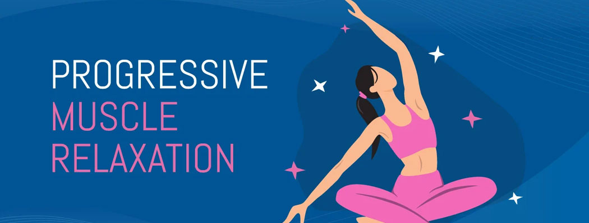

Begin with just 5 minutes a day, and increase your time as the exercise becomes easier and more comfortable.
Therapies
Art Therapy
Art therapy, is defined by the British Association of Art Therapists as: “a form of psychotherapy that uses art media as its primary mode of expression and communication. Clients referred to art therapists are not required to have experience or skills in the arts. The art therapist’s primary concern is not to make an esthetic or diagnostic assessment of the client’s image. The overall goal of its practitioners is to enable clients to change and grow on a personal level through the use of artistic materials in a safe and convenient environment” (British Association of Art Therapists, 2015),
As defined by the American Art Therapy Association (AATA) in About Art Therapy (2018), art therapy, as facilitated by a professional art therapist, is a therapeutic modality used over ongoing sessions to “improve cognitive and sensorimotor functions, foster self-esteem and self-awareness, cultivate emotional resilience, promote insight, enhance social skills, reduce and resolve conflicts and distress and advance societal and ecological change.” Creative art therapy has been used to assist patients and families in increasing self-awareness, ameliorating symptom burden, and adapting to the stressful life experiences associated with a terminal illness.
Art therapy has been recognized as beneficial and effective since first described by Adrian Hill in 1942. Even before this time, art therapy was utilized for moral reinforcement and psychoanalysis. Art therapy aids patients with, but not limited to, chronic illness, physical challenges, and cancer in both pediatric and adult scenarios.
Breathing Techniques for Stress Relief and More
If you’re dealing with high levels of stress or anxiety, there are several types of breathing techniques that may help you feel calmer and more relaxed. It’s easy to get started. All you need is a quiet space where you can pay attention to your breathing.
Breathing exercises don’t have to take a lot of time out of your day. It’s just about setting aside time to pay attention to your breathing. Here are a few ideas to get started:
-
-
If 5 minutes feels too long, start with just 2 minutes.
-
Practice multiple times a day. Schedule set times or practice conscious breathing as you feel the need.
Diaphragmatic breathing (aka belly breathing) can help you use your diaphragm properly.
A 2020 meta-analysisTrusted Source shows this type of breathing is particularly helpful in people with breathing challenges due to chronic obstructive pulmonary disease (COPD), heart problems, or cancer.
It may also help reduce stress and help with challenges related to eating disorders, constipation, high blood pressure, migraine episodes, and other health conditions.
Practice diaphragmatic breathing for 5 to 10 minutes 3 to 4 times daily.
When you begin, you may feel tired, but over time the technique should become easier and should feel more natural.
-
Lie on your back with your knees slightly bent and your head on a pillow.
-
You may place a pillow under your knees for support.
-
Place one hand on your upper chest and one hand below your rib cage, allowing you to feel the movement of your diaphragm.
-
Slowly inhale through your nose, feeling your stomach pressing into your hand.
-
Keep your other hand as still as possible.
-
Exhale using pursed lips as you tighten your abdominal muscles, keeping your upper hand completely still.
You can place a book on your abdomen to make the exercise more difficult. Once you learn how to do belly breathing lying down, you can increase the difficulty by trying it while sitting in a chair. You can then practice the technique while performing your daily activities.

{kind=link}
{kind=link}
{kind=link}
{kind=link}
{kind=link}
Journaling for Emotional Wellness
Journaling helps control your symptoms and improve your mood by:
-
Helping you prioritize problems, fears, and concerns
-
Tracking any symptoms day-to-day so that you can recognize triggers and learn ways to better control them
-
Providing an opportunity for positive self-talk and identifying negative thoughts and behaviors
When you have a problem and you're stressed, keeping a journal can help you identify what’s causing that stress or anxiety. Once you’ve identified your stressors, you can work on a plan to resolve the problems and reduce your stress.
Keep in mind that journaling is just one aspect of a healthy lifestyle for better managing stress, anxiety, and mental health conditions. To get the most benefits, be sure you also:
-
Relax and meditate each day.
-
Eat a healthy, balanced diet.
-
Exercise regularly—get in some activity every day.
-
Treat yourself to plenty of sleep each night.
-
Stay away from alcohol and drugs.
Use your journal to make sure you follow these guidelines daily.
How to journal
Try these tips to help you get started with journaling:
Try to write every day Set aside a few minutes every day to write. This will help you to write in your journal regularly.
Make it easy Keep a pen and paper handy at all times. Then when you want to write down your thoughts, you can. You can also keep a journal on your smartphone.
Write or draw whatever feels right Your journal doesn't need to follow any certain structure. It's your own private place to discuss and create whatever you want to express your feelings. Let the words and ideas flow freely. Don't worry about spelling mistakes or what other people might think.
Use your journal as you see fit You don't have to share your journal with anyone. If you do want to share some of your thoughts with trusted friends and loved ones, you could show them parts of your journal.
Keeping a journal helps you create order when your world feels like it’s in chaos. You get to know yourself by revealing your most private fears, thoughts, and feelings. Look at your writing time as personal relaxation time. It's a time when you can de-stress and wind down. Write in a place that's relaxing and soothing, maybe with a cup of tea. Look forward to your journaling time. And know that you're doing something good for your mind and body.
Whenever I fail to take my own advice, I narrow down my goals into a single snippet that I can manage even on my worst days. When 10 minutes of meditation felt like too much and I had problems keeping still, I cut it down to 5 minutes. I also have short guided meditations for the days I’m too tired to go alone.
It doesn’t matter whether you write a single line or three pages – what matters in the beginning is that you form a habit. Make journaling a part of your daily life and anchor it to another habit – like your morning coffee or your evening washing up. And get that journaling in there until it becomes routine and automatic and until you’re no longer fighting with yourself about how badly or well you’re doing it.
Writing about gratitude will lift your spirits and get your thoughts flowing again on the days you’re tired or filled with self-doubt.
This positive energy is downright invigorating.
And it doesn’t have to be complicated. Start with what’s in front of you – your laptop or journal, the balcony or the desk with your morning coffee. Then describe your emotions in detail. Instead of trying to fill up a page with all the things you’re grateful for, try focusing on a few and really let yourself feel the emotion of gratitude
Gratitude journaling can be life-changing when it’s used in difficult situations or downright irritating relationships. Ask yourself, despite all the bad, what can you learn from a difficult day? What qualities do you admire in your partner – even if you don’t want to be around them right now?
Your journal should feel like it’s yours and it should fit your personality. Maybe that’s a leather-bound notebook that you can whip out comfortably on a business flight. Or maybe that’s a worn cloth-bound notebook filled with painted daisies. Your journal should make you look forward to writing.
And don’t obsess about your handwriting. You’re probably out of practice and it will look messy in the beginning. Handwriting gets better – and more legible – with practice and plenty of patience. So don’t let an un-Instagrammable cursive stop you.
Make some messy doodles or scrawl some quotes into the margins to further break that ice and smash those high expectations. Your journal is your tool – not an Instagram flatlay waiting to happen.
A journal can also be a great substitute for smart phone scrolling. Whenever you find yourself restless and reaching for your smartphone, pull out your journal instead. Sure it may be awkward during a dinner party, but a dentist’s office or bank are perfect settings for a journaling session.
When you’re on vacation, a travel journal can be an incredible tool to write down your sensations when they’re still fresh in your mind. Use a journal to plan your trip and keep track of any great restaurants you’ve tried or museums you’d love to revisit.
If you’re intimidated to write in your journal in public, then don’t worry. It gets easier with time. And it’s helpful to remember that people may shoot you the odd glance, but they actually have no idea whether you’re drafting up a business plan or complaining about your ex.
So let your thoughts flow freely.
Be mindful of your emotions and how journaling is making you feel. Do you feel energized at the end of a journaling session, or just relief that it’s over?
If journaling is not working for you and bringing you results, then it won’t be easy to maintain your daily journaling habit. Make time to look at what isn’t working and experiment to find what journaling technique works best.
Journaling has been called the most effective form of therapy – and it’s absolutely free, too.
Whenever you’re feeling frazzled, overwhelmed or just anxious, there’s nothing like pouring your frustrations out into a journal for some catharsis.
Once you fill up a page or two, you’ll gain some much-needed distance from your troubles. You’ll probably realize things aren’t as bad as they seem and you might even see that silver lining.
Keep your journal in a secure place. And if you’re still worried that others will stumble upon it, then find a hiding space or use a laptop protected with a password.
Journaling can be anything from a fun hobby to a form of meaningful therapy. But you won’t get much benefit if you only wallow in problems or constantly blame yourself.
It’s great to release those pent-up emotions in a journal and it’s helpful to have a rant. But eventually you’ll want to brainstorm about solutions or jot down some things you’re grateful for.
{kind=link}
{kind=link}
{kind=link}

Progressive Muscle Relaxation
Jacobson’s relaxation technique is a type of therapy that focuses on tightening and relaxing specific muscle groups in sequence. It’s also known as progressive relaxation therapy. By concentrating on specific areas and tensing and then relaxing them, you can become more aware of your body and physical sensations.
Dr. Edmund Jacobson invented the technique in the 1920s as a way to help his patients deal with anxiety. Dr. Jacobson felt that relaxing the muscles could relax the mind as well. The technique involves tightening one muscle group while keeping the rest of the body relaxed, and then releasing the tension.
Progressive muscle relaxation (PMR) is a stress-management mindfulness technique. PMR can help relieve the physical symptoms of stress and anxiety, such as tight, aching muscles, by systematically tensing and releasing certain muscle groups in your body.
To begin PMR, sit or lie down in a comfortable position and breathe slowly. Start with your toes and feet, then squeeze the muscles tightly as you inhale. Count to 5, then relax your muscles as you exhale. Repeat 2 more times. Then do the same for all the other muscles in your body, progressing through your legs, stomach, arms, shoulders, and neck. If you prefer, you can also start with the muscle groups at the top of your body and work your way down. The idea is to “progress” either up or down your body. The outcome: You can train your body to relax on command.
How progressive muscle relaxation can help you manage stress and optimize performance
It’s easy to think your responses to stress (such as rapid heartbeat, sweat, and anxiety) are something you want to avoid altogether. But the energy you gain from stress can be a valuable tool to help you perform. Unfortunately, sometimes your stress can go on overdrive and be activated for too long or at too high of an intensity than you need for a specific mission-essential task on the battlefield or at home.
Progressive muscle relaxation can help you pump the brakes on your stress response when it’s on overdrive, address (and control) the physical symptoms of stress, and improve your performance.
How to optimize performance by practicing progressive muscle relaxation
At first, PMR might feel weird or uncomfortable. Like any skill, the benefits come with regular practice. Pick a time when you can practice it each day, for example before bed, at lunch, or when you first wake up.
{kind=link}
{kind=link}
{kind=link}
What is cognitive behavioral therapy?
Cognitive behavioral therapy (CBT) is a treatment approach that helps you recognize negative or unhelpful thought and behavior patterns.
CBT aims to help you identify and explore the ways your emotions and thoughts can affect your actions. Once you notice these patterns, you can begin learning how to change your behaviors and develop new coping strategies.
We can sometimes feel like we get ‘stuck’ in a loop with negative thoughts, emotions and behaviours. CBT provides tools to help us to break the cycle by recognizing and changing our thoughts. It is not about having positive thoughts all the time; it is about having true and helpful thoughts to help us feel and act our best!
Things to keep in mind
CBT can be helpful. But if you decide to try it, there are a few things to keep in mind.
It’s not a cure
Therapy can help improve concerns you’re experiencing, but it will not necessarily eliminate them. Mental health issues and emotional distress could persist, even after therapy ends.
The goal of CBT is to help you develop the skills to deal with difficulties on your own in the moment when they come up. Some people view the approach as training to provide their own therapy.
Results take time
CBT can last for weeks or months, usually with one session each week. In your first few sessions, you and your therapist will likely talk about how long therapy might last.
That being said, it’ll take some time before you see results. If you don’t feel better after a few sessions, you might worry therapy isn’t working, but give it time. Keep doing your homework and practicing your skills between sessions.
Undoing deep-set patterns is major work, so go easy on yourself.
It can be challenging
Therapy can challenge you emotionally. It often helps you get better over time, but the process can be difficult. You’ll need to talk about things that might be painful or distressing. Don’t worry if you cry during a session — it can be a typical experience during therapy.
It’s just one of many options
While CBT can be helpful for many people, it does not work for everyone. If you don’t see any results after a few sessions, do not feel discouraged. Check in with your therapist.
A good therapist can help you recognize when one approach is not working. They can usually recommend other approaches that might help more.
These are some of the most popular techniques used in CBT:
SMART Goals : SMART goals are specific, measurable, achievable, realistic, and time-limited.
Guided discovery and questioning : By questioning the assumptions you have about yourself or your current situation, your therapist can help you learn to challenge these thoughts and consider different viewpoints.
Journaling : You might be asked to jot down negative beliefs that come up during the week and the positive ones you can replace them with.
Self-talk : Your therapist may ask what you tell yourself about a certain situation or experience and challenge you to replace negative or critical self-talk with compassionate, constructive self-talk.
Cognitive Restructuring : This involves looking at any cognitive distortions affecting your thoughts — such as black-and-white thinking, jumping to conclusions, or catastrophizing — and beginning to unravel them.
Thought Recording : In this techniqueTrusted Source, you’ll record thoughts and feelings experienced during a specific situation, then come up with unbiased evidence supporting your negative belief and evidence against it. You’ll use this evidence to develop a more realistic thought.
Positive Activities : Scheduling a rewarding activity each day can help increase overall positivity and improve your mood. Some examples might be buying yourself fresh flowers or fruit, watching your favorite movie, or taking a picnic lunch to the park.
Situation Exposure : This involves listing situations or things that cause distress, in order of the level of distress they cause, and slowly exposing yourself to these things until they lead to fewer negative feelings. Systematic desensitization is a similar technique where you’ll learn relaxation techniques to help you cope with your feelings in a difficult situation.
Homework is another important part of CBT, regardless of the techniques you use. Just as school assignments helped you practice and develop the skills you learned in class, therapy assignments can help you become more familiar with the skills you’re developing.